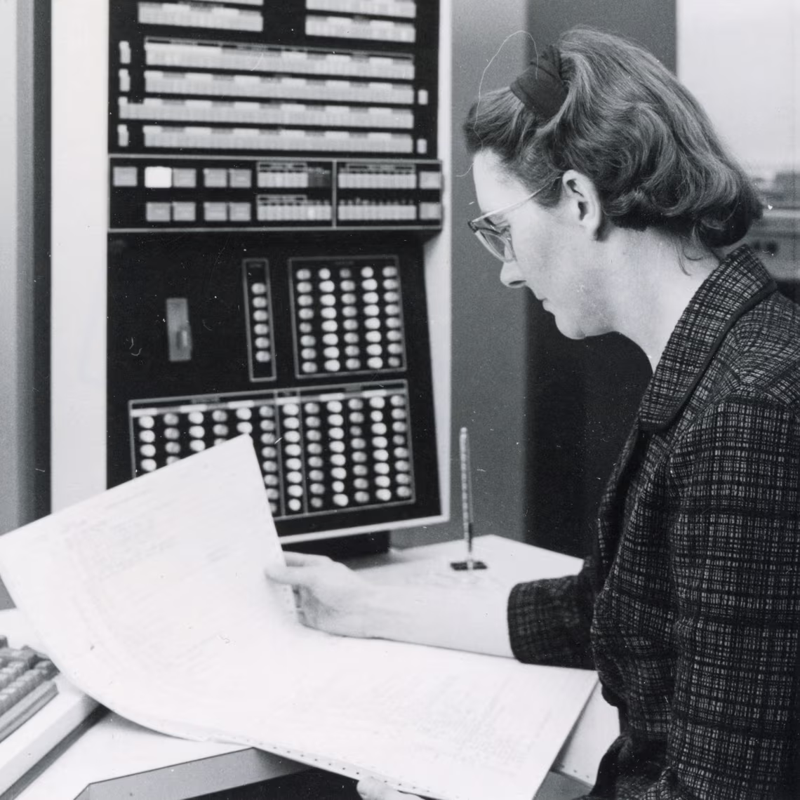
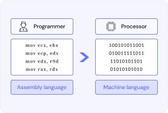
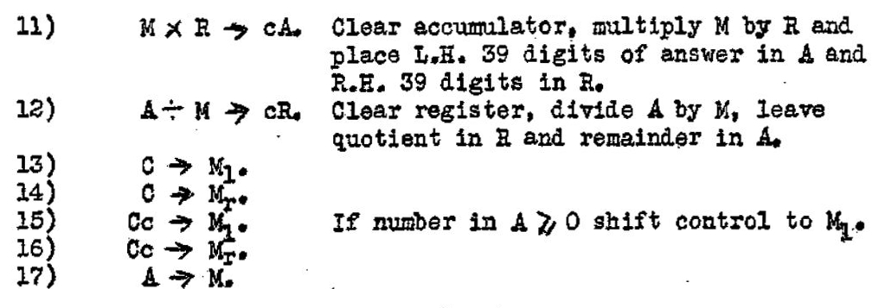

<html></html>

<head></head>
    <link rel="stylesheet" href="./style1.css" >
</head>

<body>

<h1>Signifigance</h1>





<h3>What she did</h3>

<p>
    She made assembly language, the first assembler and helped make the Automatic Relay Calculator (ARC).
    With early computers you had to rewire the computer to create a program. 
    But kathleen booth made it so programs could be stored in the computer as binary.
    An Assembly language then translate instructions into machine code.

</p>




<h3>Automatic Relay Calculator</h3>

<p>
    When Kathleen was at Birkbeck College, she and her team of mathmatision lead by Andrew Booth did the calculations for the scientists working on the X-ray crystallography images.
    To help crunch number Andrew Booth had an idea to building a computing machine called the Automatic Relay Calculator.       
</p>


<p>
    In 1947 Kathleen accompanied him on a six-month visit to Princeton University, to talk to John von Neumann, who had developed the idea of storing programs inside a computer. 
    when they returned to England they co-wrote "General considerations in the design of an All purpose electronic digital computer", and went on to make modifications to the original ARC to incorporate the lessons learnt.
</p>

<br>
<br><br>

<iframe 
    width="545" 
    height="300" 
    src="https://www.youtube.com/embed/hjBJB_P7SLw?si=i6osO6nCPrHIsvkB" 
    title="YouTube video player" 
    frameborder="0" 
    allow="accelerometer; autoplay; clipboard-write; encrypted-media; gyroscope; picture-in-picture; web-share" 
    referrerpolicy="strict-origin-when-cross-origin" 
    allowfullscreen>
</iframe>

<br>
<br>
<br>


<h3>Assembly language</h3>

<p>
    As well as building the hardware for the first ARC, she wrote all the software for the ARC2 and SEC machines, in the process inventing what she called “Contracted Notation” and would later be known as assembly language, the first computer language.
</p> 


<p>
    Before assembly language computer were programed using binnary. Understandably, this was not something easy to read or write programs in. Assembly was the first language to use 
    
    <a 
        href="https://www.computer-dictionary-online.org/definitions-i/instruction-mnemonic">
        
        <i>mnemonic instructions</i> 
    </a>

    . This shortened the amount of work and made it easier to read, paving the way for today’s higher-level languages.
    the mnemonic instructions are changed in to machine code represented and, saved in storage.
</p>



<h3>Impacted</h3>

<p>
    Early computers had to be programmed by flipping switches or unplugging and plugging wires into the correct place every time you wanted to make a calculation. 
    It was extremely slow and very easy to make an error. 
    Assembly allowed programs to communicate directly to the machine, making it far easier and making many things that would have been impossible, possible. 
    Without Kathleen Booth many advancements in technology would not be possible today.

</p>

<br>
<br>
<br>

<h4><a href="./index.html">Return to home page </a></h4>


</body>

</html>
